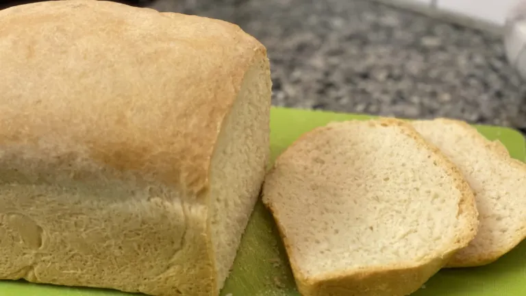

One Loaf White Bread
Back to recipe index

Description:
A recipe for single loaf white bread made by hand. Recipe makes a 2lb loaf, and scales easily. Yum!
Reference recipe
Ingredients
- 1 1/4 cups water
- 2 tablespoons butter
- 2 teaspoons sugar
- 3/4 teaspoon salt
- 1 package yeast
- 1 tablespoon flour
- 3 1/4 cup flour
Steps
- Mix the butter, sugar, and salt into the warm water.
Stir in 1 tablespoon flour and the yeast (Can use 1 Tablespoon yeast in place of the packet).
Wait 5 minutes; if yeast does not bubble buy new yeast.
- Put flour in a large bowl; stir in yeast mix.
Stir thoroughly; turn onto a floured board and knead.
Knead in as much of the flour as possible to make a satiny dough; if dough is sticky add more flour a tablespoon at a time.
- Put dough in a greased bowl and turn to coat.
Cover with a clean damp towel and let rise til double.
- Punch down; shape into loaf and put in greased loaf pan. Let rise.
- Bake at 350 for 35 minutes or until bottom sounds hollow when thumped. Can also be shaped into 12 dinner rolls or 8 hamburger buns. Bake for less time if using these shapes.
Back to recipe index